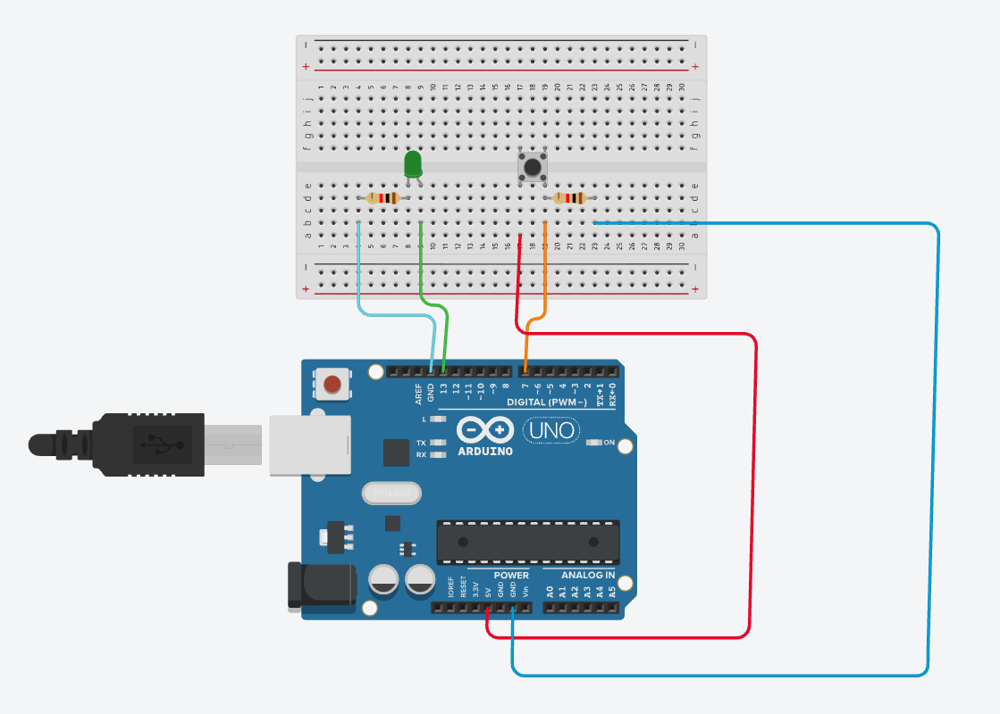

Práctica 1: Control de LED con botón usando Arduino
Profesor: Luis Alfonso Martínez Alfaro
Asignatura: Tecnologías / Robótica
Tema: Entradas y salidas digitales con Arduino
Duración estimada: 1 sesión
Practicario
Primero completa tus respuestas en esta hoja. Cuando termines, usa el botón para abrir la versión de impresión y guardar un PDF con tus propias respuestas.
1. Propósito de la actividad
Comprender cómo Arduino puede recibir información del entorno mediante sensores o botones y responder activando dispositivos electrónicos, en este caso un LED.
Esta práctica permitirá aprender los conceptos básicos de circuitos electrónicos simples, entradas digitales, salidas digitales y programación básica en Arduino.
Estos conocimientos serán fundamentales para proyectos posteriores como robots, sensores y sistemas automatizados.
2. Materiales
Para cada equipo de trabajo se requiere:
- 1 Arduino UNO.
- 1 cable USB.
- 1 protoboard.
- 1 LED.
- 1 botón (push button).
- 2 resistencias (220Ω o 330Ω).
- Cables jumper.
- Computadora con Arduino IDE.
3. Descripción del circuito
El circuito funciona de la siguiente manera:
- El LED se conecta a un pin digital de Arduino.
- El botón se conecta a otro pin digital configurado como entrada.
- Cuando se presiona el botón, Arduino detecta la señal y enciende el LED.
Esto representa un sistema común en electrónica: Entrada -> Procesamiento -> Salida.
Ejemplo: Botón presionado -> Arduino detecta señal -> LED se enciende.
4. Armado del circuito
Armar el circuito siguiendo el diagrama proporcionado por el profesor.
Conexiones principales:
LED
- Pin positivo del LED -> resistencia -> pin 13 de Arduino.
- Pin negativo del LED -> GND.
Botón
- Una pata del botón -> pin 7 de Arduino.
- Otra pata del botón -> 5V.
- Resistencia -> GND.
La resistencia protege el circuito y evita que pase demasiada corriente.
5. Programación en Arduino
Una vez armado el circuito, cargar el siguiente programa:
int led = 13;
int boton = 7;
int estadoBoton = 0;
void setup() {
pinMode(led, OUTPUT);
pinMode(boton, INPUT);
}
void loop() {
estadoBoton = digitalRead(boton);
if (estadoBoton == HIGH) {
digitalWrite(led, HIGH);
}
else {
digitalWrite(led, LOW);
}
}6. Funcionamiento del programa
- Define el pin del LED.
- Define el pin del botón.
- Lee constantemente el estado del botón.
- Si el botón está presionado, el LED se enciende.
- Si el botón no está presionado, el LED se apaga.
Este proceso ocurre de forma continua dentro del ciclo loop().
Diagrama de la práctica

Instrucción para ingresar a Tinkercad
- Abre tu navegador de internet (Chrome, Edge o Firefox).
- Ingresa a la siguiente dirección:
https://www.tinkercad.com. - Haz clic en Iniciar sesión (Sign in).
- Selecciona una de estas opciones para entrar: Cuenta de Google, Cuenta de Microsoft o Cuenta de Autodesk.
- Una vez dentro de la plataforma, entra a la sección Circuits (Circuitos).
- Presiona el botón Create new Circuit (Crear nuevo circuito).
- Dentro del simulador podrás agregar un Arduino Uno, insertar LEDs, colocar resistencias, conectar buzzer y escribir el código del programa.
- Finalmente presiona Start Simulation para ejecutar el circuito y verificar que funcione correctamente.
Indicaciones importantes:
- Guarda tu proyecto con el nombre:
LedBoton_Arduino_TuNombre. - Verifica que el circuito no tenga errores de conexión.
- Comprueba que los componentes del proyecto funcionen correctamente en la simulación.
7. Actividad de aprendizaje
Después de probar el circuito, experimentar con el programa:
- Modificar el código para que el LED permanezca encendido 3 segundos al presionar el botón.
- Modificar el programa para que el LED parpadee cuando se presione el botón.
- Intentar hacer que el LED cambie de estado cada vez que se presione el botón (encendido -> apagado -> encendido).
8. Evidencia de aprendizaje
- Fotografía del circuito armado.
- Captura del código utilizado.
- Breve explicación del funcionamiento.
- Video corto mostrando el circuito funcionando.
La evidencia deberá integrarse en el Google Sites del alumno correspondiente a la materia.
9. Reflexión
Responder las siguientes preguntas:
- ¿Qué es una entrada digital?
- ¿Qué es una salida digital?
- ¿Por qué se utilizan resistencias en los circuitos electrónicos?
- ¿En qué otros dispositivos de la vida cotidiana se utilizan botones para controlar sistemas?
10. Conexión con proyectos futuros
Este tipo de circuito es la base para proyectos más avanzados como:
- Robots.
- Alarmas.
- Sensores de movimiento.
- Sistemas automáticos.
- Proyectos de robótica educativa.
En próximas prácticas se integrarán motores, sensores y sistemas de control, aplicando lo aprendido en esta actividad.
Respuestas del practicario
Firma de revisión
Profesor: ____________________________________